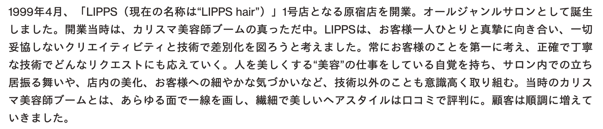

Body

1999年4月、「LIPPS（現在の名称は“LIPPS hair”）」1号店となる原宿店を開業。オールジャンルサロンとして誕生しました。開業当時は、カリスマ美容師ブームの真っただ中。LIPPSは、お客様一人ひとりと真摯に向き合い、一切妥協しないクリエイティビティと技術で差別化を図ろうと考えました。常にお客様のことを第一に考え、正確で丁寧な技術でどんなリクエストにも応えていく。人を美しくする“美容”の仕事をしている自覚を持ち、サロン内での立ち居振る舞いや、店内の美化、お客様への細やかな気づかいなど、技術以外のことも意識高く取り組む。当時のカリスマ美容師ブームとは、あらゆる面で一線を画し、繊細で美しいヘアスタイルは口コミで評判に。顧客は順調に増えていきました。